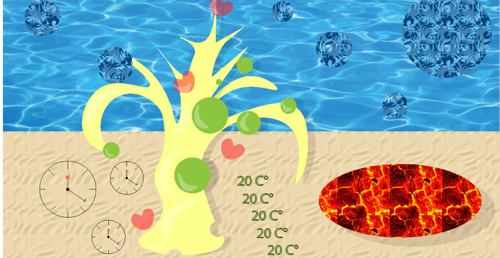
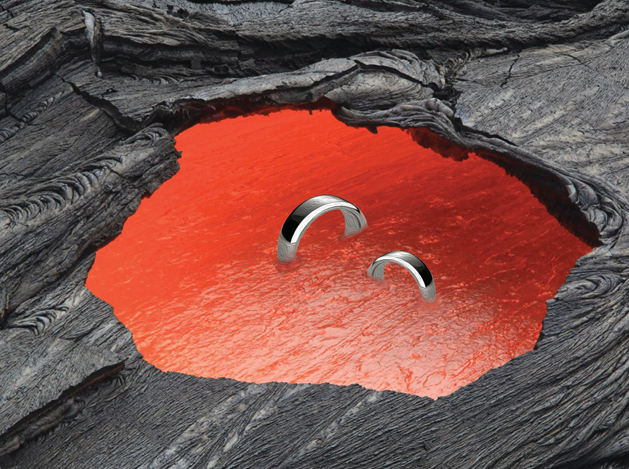
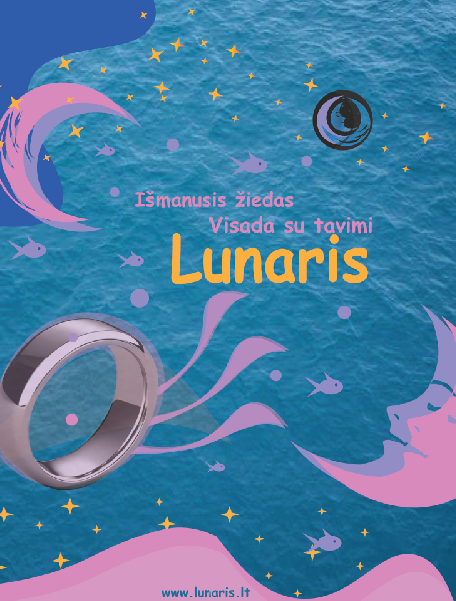
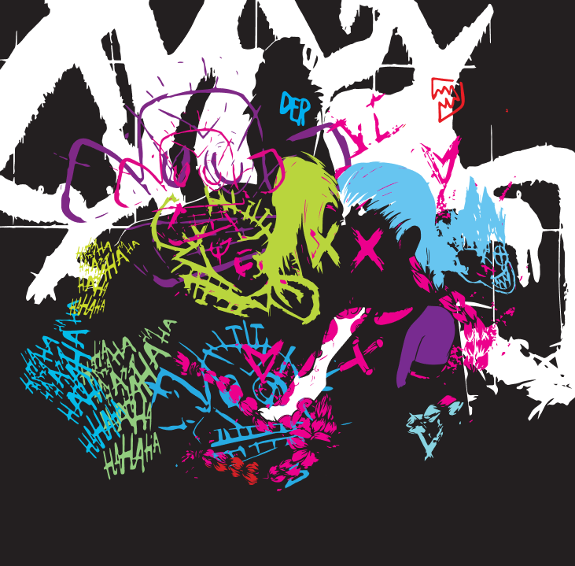
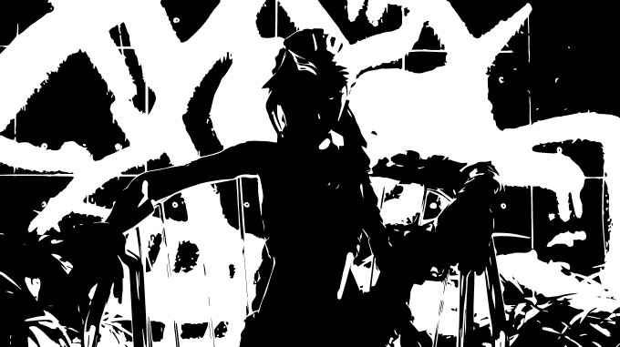

← Grįžti į projektus

Smart žiedo vizualinis identitetas
Multimedijos dizaino projektas, kuriame kūriau „Smart" žiedo vizualinį identitetą: logotipą, plakatą, fotomanipuliaciją ir iliustraciją. Tikslas — sujungti produktą su pasakų pasauliu ir sukurti įtaigią, jaunatvišką estetiką.
Produkto vizualizacija — sidabrinis paviršius, atsparumas vandeniui.

Grafinė produkto vizualizacija ir kompozicija.

Kontrastas tarp lavos tekstūros ir žiedo elegancijos.

Reklaminis plakatas — mistiška nakties tema, ryškios spalvos.

Iliustracija — Adobe Photoshop, Illustrator, InDesign.

Papildomi grafiniai elementai identitetui.